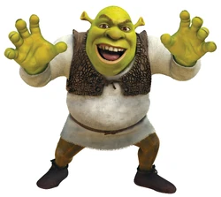
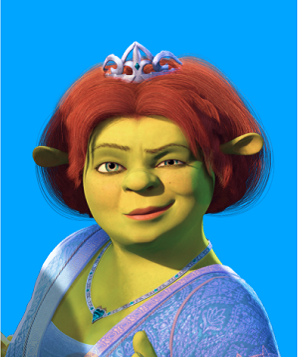
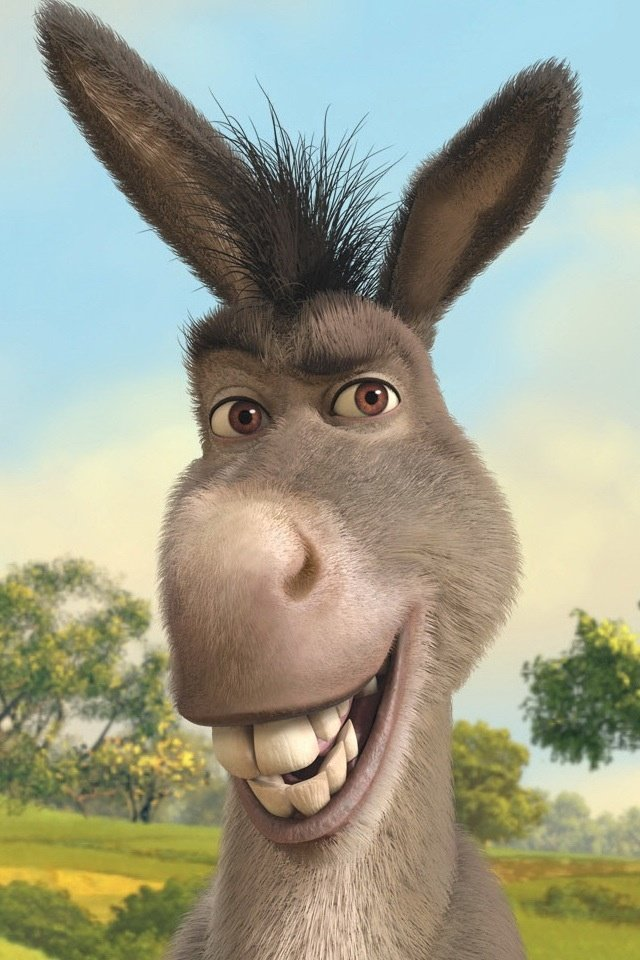
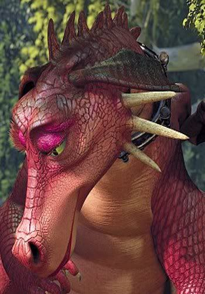
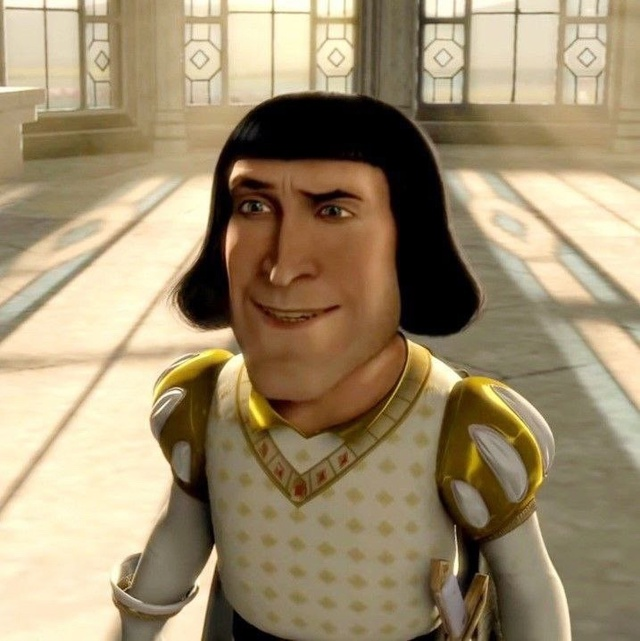
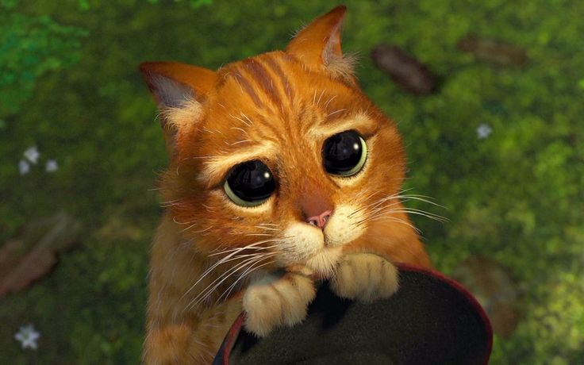

- Шрек 
-
Шрек (англ. Shrek) — заглавный герой одноимённой серии фильмов и игр, это огромный зелёный огр, который живёт на болоте, в окрестностях города-государства Дюлок, населённого людьми, животными, куклами и др. из разных европейских сказок и легенд. Людей он, по доброте душевной, не ест, но его самолюбие греет тот факт, что при виде него все бросаются врассыпную.
- Фиона 
-
Принцесса Фиона, заточённая в башне, проклята превращаться в огра каждую ночь. Освобождённая Шреком, она влюбляется в него, приняв свою истинную сущность. В сиквелах становится матерью тройняшек-огров и защитницей королевства.
- Осёл 
-
Говорящий осёл с комичным характером, ставший лучшим другом Шрека. Участвует во всех приключениях, женится на драконе-самке (Драконихе) и становится отцом гибридов-детенышей.
- Дракониха 
-
Дракониха впервые появляется при охране заброшенного замка, который служит в качестве тюрьмы принцессы Фионы.
Можно предположить, что это ее давнее, постоянное место жительства, так как в башне находится много сокровищ и, случается, замок усеян костями и доспехами многих рыцарей-неудачников, которые пытались спасти Фиону.
В поисках принцессы, Шрек и Осел разделились. И получилось так, что Осел попал в пламенные объятия Драконихи. От безысходности, засыпав её комплиментами, он постарался потянуть время. Шрек, вскоре, спас и Фиону, и Осла, оставив одну влюблённую Дракониху в замке.
Позже, задумчивый Осёл обнаруживает Дракониху, плачущую от одиночества у ручья. Как она сбежала из замка неизвестно, Дракониха явно не хочет вернуться к своей старой жизни. Чувствуя жалость к ней, Осёл успокаивает её.
Затем Дракониха помогает Шреку и Ослу предотвратить свадьбу Фионы, съев жениха. После этого, Осёл и она становятся постоянной парой и у них рождается шесть драконоосликов - детей Драконихи и Осла.
- Лорд Фаркуад 
-
Лорд Фаркуад - жестокий, жадный человек, который хочет официально стать королем Дюлока. Полная степень его жестокости раскрывается в конце фильма, когда он угрожает поймать Шрека и четвертовать его.
Он также не заботится о безопасности или благополучии своих людей, поскольку он открыто признает, что он готов отправить своих собственных рыцарей на смертельный риск, чтобы спасти Фиону.
Несмотря на все его негативные черты, также показывается, что он честен и верен своему слову, о чем свидетельствует тот факт, что он выполнил обещание Шреку вернуть его болото после того, как тот доставит ему принцессу Фиону. Тем не менее, он был очень неблагодарным, грубым и никогда не благодарил Шрека или Ослика, действуя так, как будто это его работа. Он также, по-видимому, компетентный административный деятель, и город Дюлок процветает под его правлением. После его смерти город с тех пор пустовал.
Немного о нем известно в фильме, хотя музыкальная глубина погрузилась в его прошлое и его ненависть к сказочным существам. В мюзикле он проводит большую часть своего времени в камере пыток, играет в видеоигры на Волшебном зеркале, потягивая напитки и принимая ванну. Он, очевидно, также применил дресс-код, чтобы граждане были одеты как куклы из «Добро пожаловать в Дюлок», чтобы сделать его королевство более совершенным.
- Кот в Сапогах 
-
Кот в Сапогах (англ. Puss in Boots) — герой, легендарный убийца огров и людоедов и друг Шрека. Рыжий кот со светлым животом, мордой и кончиками лап. Его можно опознать по ярко-зелёным глазам, старым протёртым чёрным сапогам с красными полосами, и такой же шляпе с пушистым жёлтым пером и широким поясом, на котором находится именная шпага.
Это рыжий кот, одетый в чёрную шляпу с жёлтым пером, кожаный плащ и, конечно же, сапоги. Хотя в мультфильме «Шрек навсегда» он предстал нам в необыкновенном образе: это был толстый, ленивый кот с розовой ленточкой на шее и без излюбленных сапогов, располневший от забот хозяйки Фионы. В фильме «Кот в сапогах: Последнее желание» после жизни в приюте для престарелых котов со временем у него отросла борода, которую позже сбривает ему Киса Мягколапка при плавании на плоту по реке, вернув ему прежний вид.